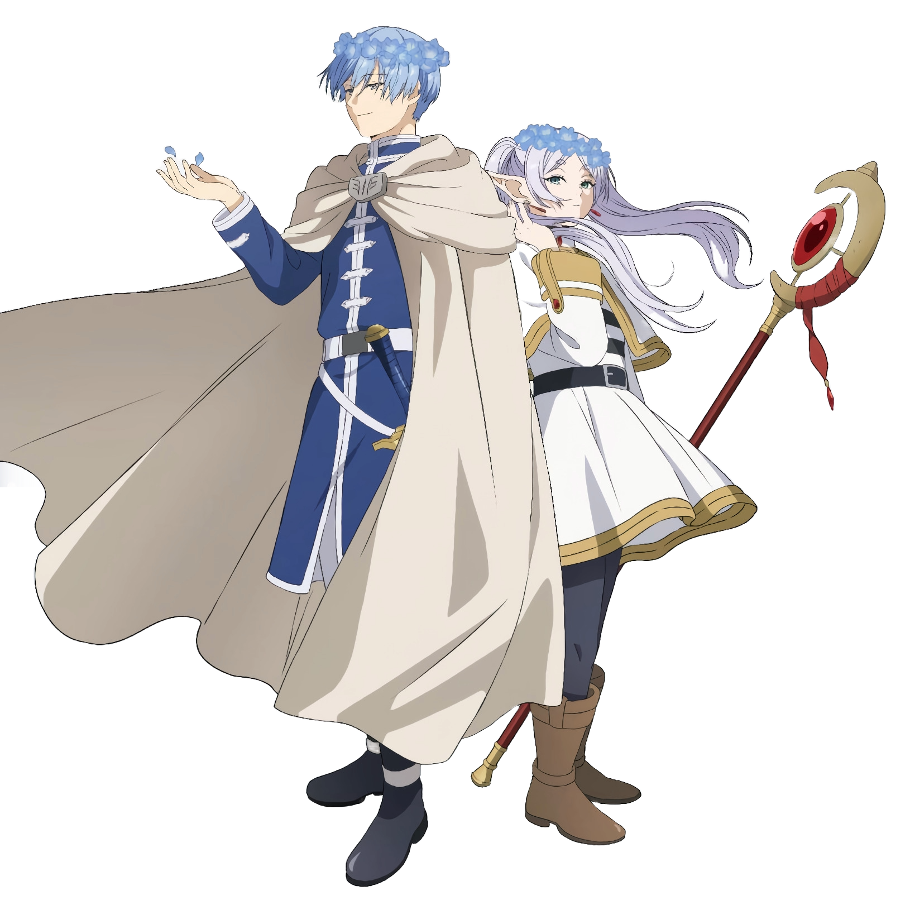

Sinopsis
Raja iblis telah dikalahkan, dan pasukan pahlawan yang berhasil kembali ke rumah sebelum bubar. Empat orang itu—penyihir Frieren, pahlawan Himmel, pendeta Heiter, dan prajurit Eisen—bercengkrama tentang perjalanan mereka selama satu dekade saat momen untuk mengucapkan selamat tinggal satu sama lain tiba. Namun, berlalunya waktu berbeda bagi elf, sehingga Frieren menyaksikan teman-temannya perlahan-lahan meninggal satu per satu. Sebelum kematiannya, Heiter berhasil mendorong seorang murid manusia muda bernama Fern kepada Frieren. Didorong oleh semangat elf untuk mengumpulkan berbagai mantra sihir, pasangan itu memulai perjalanan yang tampaknya tanpa tujuan, mengunjungi kembali tempat-tempat yang pernah dikunjungi oleh para pahlawan dahulu. Selama perjalanan mereka, Frieren perlahan-lahan menghadapi penyesalannya atas kesempatan yang terlewat untuk membentuk ikatan yang lebih dalam dengan rekan-rekannya yang kini telah tiada.